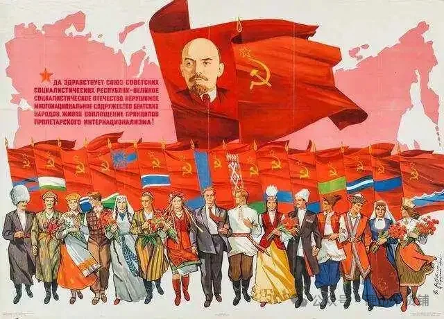
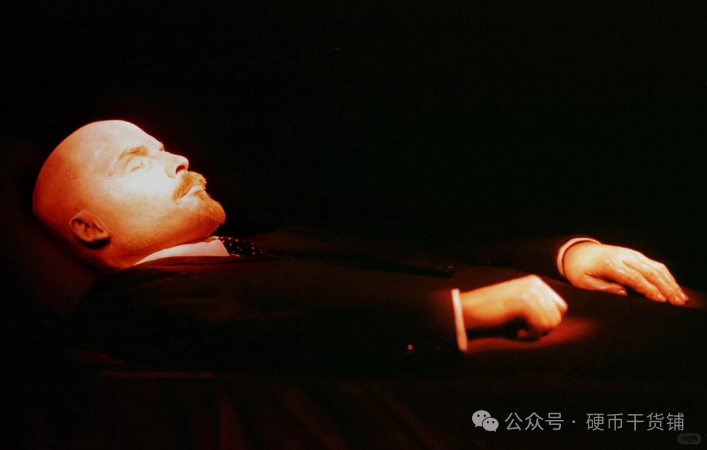
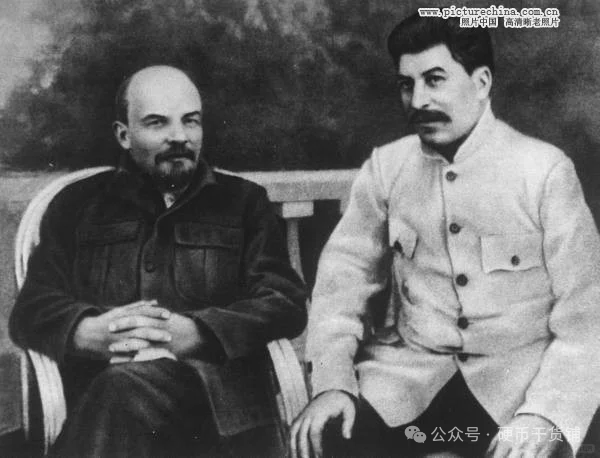
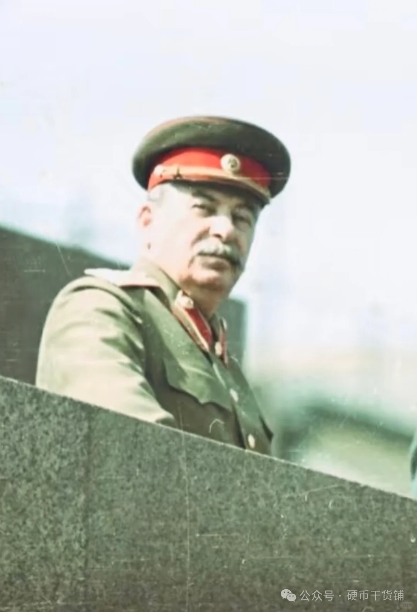

列宁晚年泣血警示：留给苏联的不只是遗嘱，更是对斯大林的致命担忧
文字与图片版权归各自权利人所有。 查看公众号原文 ↗
1922年12月，苏联正式成立，这个新生的联盟国家，终于迎来了和平与稳定的曙光，国民经济开始逐步恢复，社会秩序逐渐稳定，一切都在朝着好的方向发展。

但此时，苏联的缔造者——列宁，身体状况却越来越差。
从十月革命爆发到苏联成立，短短五年时间，列宁经历了太多的风雨：领导武装起义，推翻临时政府；应对内战和外国干涉，保卫红色政权；推行战时共产主义政策，度过危机；协商组建苏联，化解民族矛盾。长期的劳累、紧张和精神压力，让列宁的身体不堪重负，患上了严重的中风。
1922年5月，列宁第一次中风，右侧身体瘫痪，无法说话，只能卧床休息，暂时失去了工作能力。经过一段时间的治疗，列宁的身体有所好转，能够勉强工作，但身体状况依然不稳定。1922年12月，苏联成立大会召开时，列宁虽然出席了大会，但已经无法发表演讲，只能通过书面形式，表达自己对苏联未来的期望。

1923年3月，列宁第二次中风，这次中风，比第一次更加严重，他彻底失去了说话的能力，左侧身体也陷入瘫痪，只能卧床不起，完全无法工作。1924年1月21日，列宁在莫斯科郊外的高尔克村逝世，享年54岁。
列宁的逝世，对苏联来说，是一个巨大的损失。他是苏联的缔造者，是布尔什维克党的领袖，是世界社会主义运动的先驱，他的思想和理念，指引着苏联的发展方向。列宁逝世后，苏联上下陷入了巨大的悲痛之中，亿万民众自发走上街头，送别这位伟大的革命领袖。
很多人认为，列宁晚年，留给苏联的，只有一份遗嘱，但事实上，列宁留给苏联的，远不止这些。他在晚年，虽然身处病榻之上，但依然密切关注着苏联的发展，对苏联的未来，充满了担忧，他留下的“最后书信”和遗嘱，不仅是对苏联发展的指导，更是对后来苏联领导人的警示，其中，最核心的，就是对斯大林的真实态度，以及对苏联官僚化的警惕。

列宁晚年，对斯大林的态度，发生了巨大的转变——从最初的信任和重用，逐渐转变为警惕和担忧。
斯大林，出身于格鲁吉亚的一个贫困家庭，早年加入布尔什维克党，跟随列宁从事革命工作，在革命斗争中，表现出了坚定的革命意志和出色的组织能力，得到了列宁的信任和重用。十月革命后，斯大林先后担任了布尔什维克党中央总书记、苏维埃政府民族事务人民委员等重要职务，在组建苏联、应对内战等方面，发挥了重要的作用。
但列宁晚年，逐渐发现了斯大林的缺点和问题——斯大林性格粗暴、专断，权力欲极强，不善于听取不同意见，在处理民族问题和党内事务时，过于强硬，甚至存在滥用权力的倾向。其中，最让列宁不满的，是斯大林在处理格鲁吉亚问题时的做法。

上一期我们说到，在组建苏联的过程中，格鲁吉亚方面主张建立松散的联邦，拥有高度的自治权，而斯大林则主张建立集权的联盟，对格鲁吉亚方面采取了强硬的手段，甚至不惜动用武力，压制格鲁吉亚的意见，这种做法，违背了列宁的“民族自决”理念，也让列宁对斯大林产生了强烈的不满。
1922年12月，列宁在病榻上，写下了《给代表大会的信》（也就是我们常说的“列宁遗嘱”），在这封信中，列宁对斯大林的性格和做法，提出了严厉的批评，他指出：“斯大林同志当了总书记，掌握了无限的权力，他能不能永远十分谨慎地使用这一权力，我没有把握。”列宁甚至建议，罢免斯大林的党中央总书记职务，另选一位性格温和、善于听取不同意见的人，担任这一重要职务。
除了对斯大林的警惕，列宁晚年，最担忧的，就是苏联的官僚化问题。
十月革命胜利后，苏维埃政权建立，布尔什维克党成为了执政党。随着时间的推移，党内逐渐出现了官僚主义的倾向——部分党员干部，脱离群众，贪图享乐，滥用权力，欺压百姓，把自己当成了“官老爷”，忘记了革命的初心和使命。这种官僚化的倾向，不仅影响了党和政府的形象，也损害了民众的利益，让列宁感到无比的担忧。
列宁在晚年的“最后书信”中，多次强调，要警惕官僚主义的危害，要加强党的建设，要密切联系群众，要反对滥用权力，要建立健全监督机制，防止党员干部腐化变质。他指出，官僚主义是苏维埃政权的“最大敌人”，如果不及时遏制官僚主义的倾向，苏联的社会主义事业，就有可能面临失败的危险。
此外，列宁晚年，还对苏联的经济发展、民族政策、党内民主等问题，提出了很多重要的建议。他主张，放弃战时共产主义政策，推行新的经济政策，恢复国民经济；坚持“民族自决”理念，妥善处理民族矛盾，促进各民族的平等、团结和发展；加强党内民主建设，尊重不同意见，反对个人专断，确保党的决策的科学性和正确性。
列宁的这些“最后书信”和遗嘱，是他对苏联发展的深刻思考，是他留给苏联人民的宝贵财富，也是对后来苏联领导人的重要警示。但遗憾的是，列宁逝世后，他的很多思想和建议，并没有得到很好的贯彻和执行，他对斯大林的警惕，对官僚化的担忧，最终都变成了现实。
列宁逝世后，苏联陷入了权力真空之中。布尔什维克党内，涌现出了一批有影响力的领导人，他们纷纷争夺苏联的最高权力，其中，最主要的竞争者，就是托洛茨基、斯大林、季诺维也夫、加米涅夫、布哈林等人。这些人，都是列宁时期的重要领导人，都拥有自己的支持者和势力范围，他们之间的权力博弈，注定会异常激烈。
下一期，我们走进列宁逝世后的权力真空，揭秘斯大林登顶之路的关键博弈与隐秘细节：
列宁逝世后，苏共高层群雄逐鹿——威望最高的托洛茨基、掌握组织大权的斯大林、结成同盟的季诺维也夫与加米涅夫、理论权威布哈林，谁能在这场权力博弈中胜出？斯大林凭借怎样的政治手腕，一步步登顶苏共最高权力？